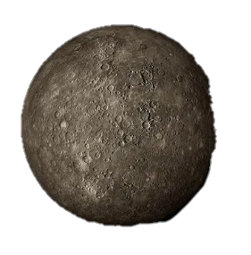
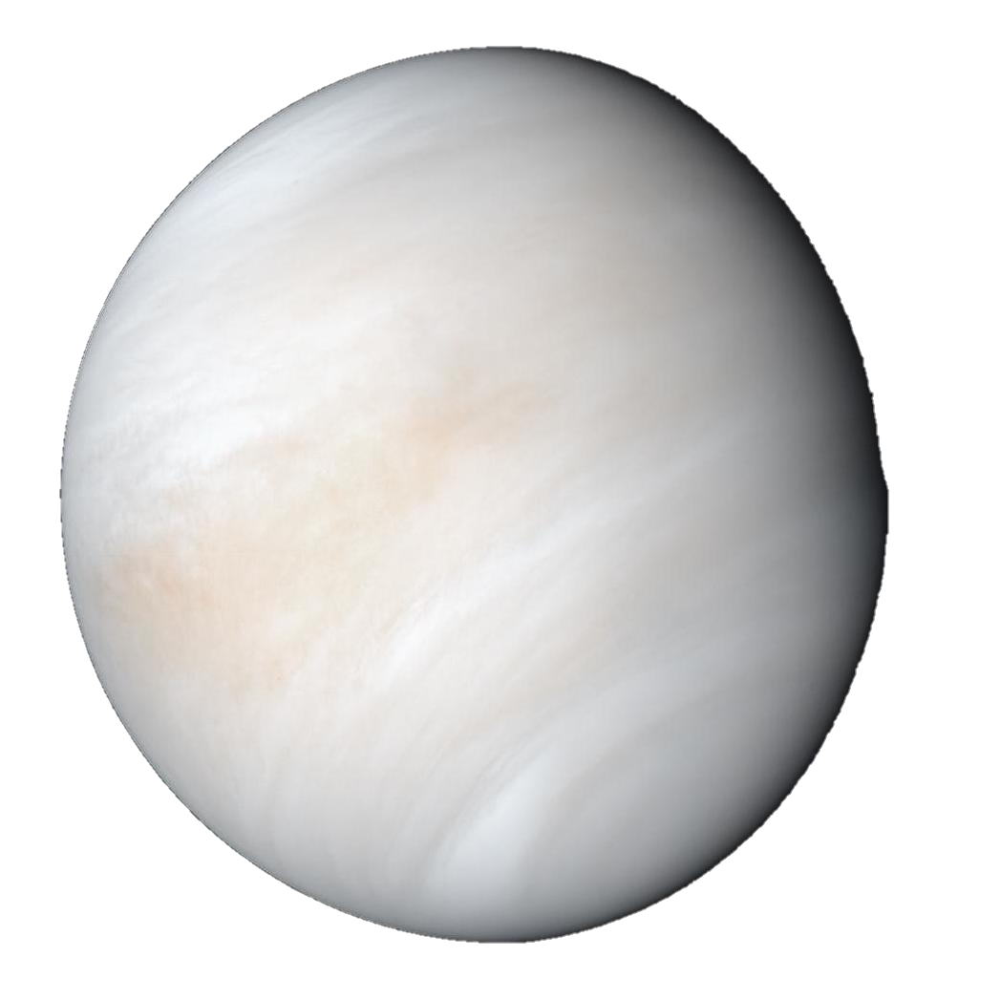
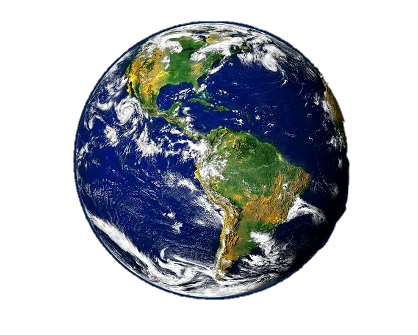
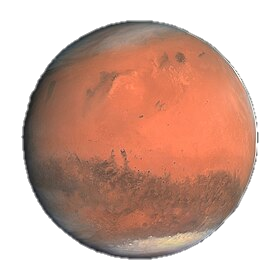
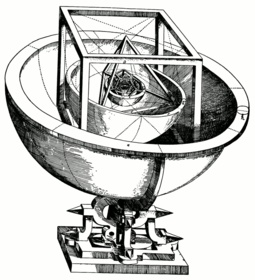
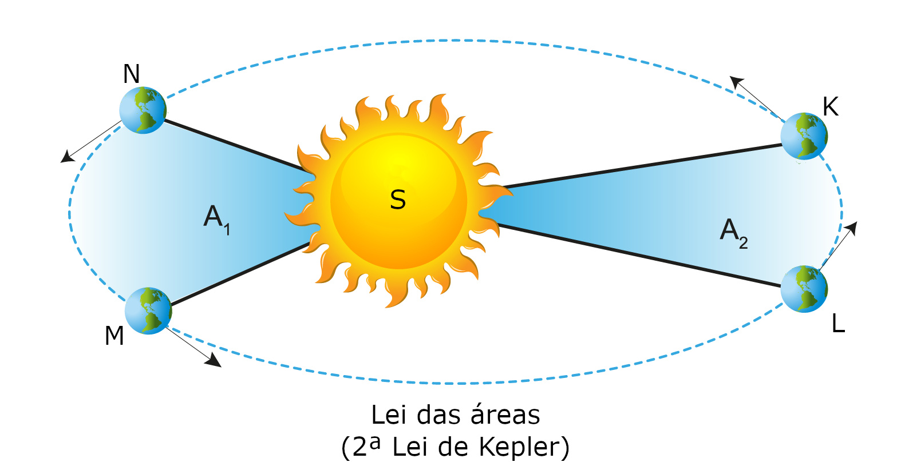
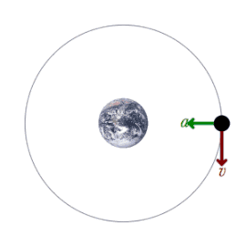
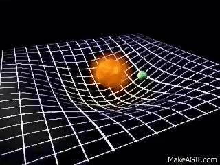
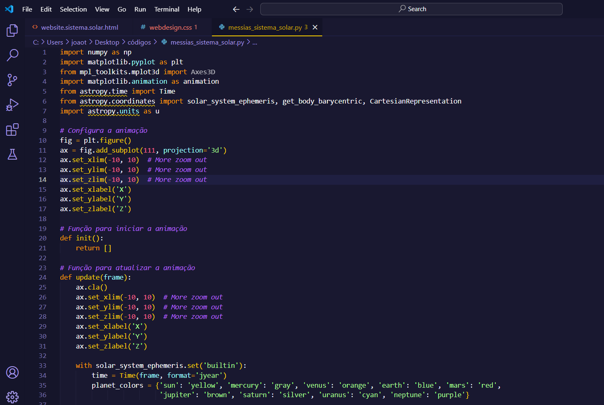
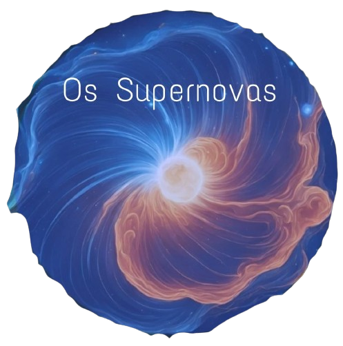

O QUE SÃO OS PLANETAS ROCHOSOS E ONDE ELES ESTÃO?
O Sistema solar é composto por 8 planetas, cinturões de asteróides, alguns planetas anões e diversas luas,e a estrela central, O Sol.Aqui temos um modelo dos quatro planetas rochosos,os mais próximos do sol nesta ordem, Mercúrio, Vênus, Terra e Marte.Usamos esses planetas como referência no nosso trabalho pelo motivo de não só serem os mais próximos a nossa casa, Terra, como também pelo cinturão de asteróides que separa Marte de Júpiter, e pela distância imensa que separa os gigantes gasosos do sistema solar interno.
O sistema solar em si se formou há cerca de 4,6 Bilhões de anos, e a teoria mais aceita entre os cientistas é de que isso ocorreu a partir de uma nebulosa composta de vários elementos no espaço,algo que foi provavelmente proveniente de uma supernova de outra estrela anciã. Tais materias vieram por se acumular na região central da nebulosa, formando o Sol em sua infância estelar, e por conta da força gravitacional da recém formada estrela, os materiais mais densos se acumularam nas proximidades do sol, sendo esses os quatro planetas rochosos, e as partículas menos densas orbitavam na periferia, formando os quatro gigantes gasosos.
Mas como os planetas rochosos são?

Mercúrio é o primeiro planeta rochoso, representado nessa foto acima, ele é o mais próximo do sol, além de ser o menor planeta do sistema solar.Possíveis destaques para mercúrio seriam o avanço de seu periélio, que serviu como um comprovante da teoria da relatividade geral de einstein,pois só com ela essa peculiaridade foi explicada. Há também o fato de ter uma assustadora temperatura média de cerca de 167°C, e mesmo assim não é o planeta mais quente, esse título fica para o seu vizinho, o próximo a ser comentado.

Também chamado de Estrela da Manhã, Vênus é o planeta com a órbita mais próxima da Terra. É um dos planetas mais marcantes para qualquer um que já olhou o céu, por causa da sua intensa luminosidade que é causada pela irradiação do intenso calor do sol em sua atmosfera rica em dióxido de carbono. Inclusive, é o planeta mais quente do sistema solar mesmo sendo mais distante que mercúrio, por causa do intenso efeito estufa, tornando-o um planeta muito semelhante a Terra, mas inabitável, com uma temperatura que pode alcançar em média 460°C!

Planeta Terra,a nossa casa, é o terceiro planeta dos rochosos, e é o mais massivo deles, apesar de ainda ser um dos menores do sistema. É o único planeta que sabemos que tem vida e que possui condições ideais para tanto, o seu vizinho no entanto, parece ser um tanto quanto promissor para o futuro da humanidade nesse quesito.

Marte é o vizinho mais famigerado da Terra, não só por ser o distinto planeta vermelho e próximo no céu, como por ser alvo de diversas discussões quanto à colonização de outros planetas no futuro, sendo Marte o primeiro óbvio candidato, já que ele parece ter tido um passado bem semelhante ao presente da terra, com temperatura amena e água líquida. Por esse e outros motivos, há um fascínio por muitos sobre a ideia de levar a humanidade à Marte, com filantropos como Elon Musk afirmando explicitamente seu desejo de trazer esse futuro para a raça humana, mas no fim, cabe ao decorrer da ciência e política nos próximos anos para nos guiar até lá, e enquanto não conseguimos mudar de planeta, que cuidemos bem da nossa casa ao menos enquanto só temos ela.
Constituição das leis de órbita modernas
Johannes Kepler foi um cientista extremamente influente para a europa no século XV. Contemporâneo de Tycho Brahe e Galileu Galilei, Kepler defendia fortemente o modelo copernicano do sistema solar e até propôs um modelo que o explicava, usando como base sólidos platônicos como organizadores das órbitas dos planetas até então conhecidos, como pode ser visto na imagem abaixo. No entanto, essa ideia acabou se mostrando equivocada e embora ele não tenha abandonado sua teoria original, quando chegou a trbalhar com Tycho Brahe, ele desenvolveu as suas famosas 3 leis matemáticas relativamente simples que descreviam bem a órbita dos corpos celestes antes mesmo da teoria de gravitação universal de Isaac Newton.

As leis formuladas por Kepler eram 3:
A lei das Órbitas Elípticas, que determinava o movimento dos planetas em formato elíptico, com o sol em um dos focos, algo que ele descobriu ao analisar a órbita de Marte em seus estudos com Tycho.
A lei das áreas, ela afirma que a linha que liga o sol a um planeta ao longo da órbita deste varre áreas iguais em tempos iguais, novamente usando como base a matemática da elipse. A relevância dessa lei é por indicar que os planetas se movem mais rapidamente quando próximos ao sol e mais lentamente quando distantes da estrela.
Por fim, temos a Lei dos Períodos, onde á uma razão de proporcionalidade entre o quadrado do período orbital e o quadrado do raio médio da órbita, por perceber essa semelhança ao estudar diferentes planetas.

Com base nos estudos de Kepler e Tycho, Isaac Newton formulou a chamada Lei da Gravitação Universal, que implicava na existência de uma força de atração entre corpos com massa, que se torna essencial para a compreensão do modelo de Kepler e das órbitas dos planetas, e por muito tempo, a teoria de Newton foi a mais condizente com o nosso universo, até que certas inconsistências começaram a se ressaltar cada vez mais ao longo do século XIX, e a solução vinha com um nome, Albert Einstein.

Einstein em 1905 publicou a sua Teoria da Relatividade Restrita, que se desenvolveu ao longo dos seus estudos na Teoria da Relatividade Geral, em que a gravidade e a órbita dos planetas deixava de ser relacionada diretamente a uma força, mas um novo conceito formulado por Einstein, determinado por "Espaço-Tempo", que era em síntese uma organização do Universo, e com a presença de um corpo massivo, o espaço tempo se deformava, e então o passar do tempo nesses corpos era diferente de um referencial isolado e as órbitas eram como a precessão de um objeto celestial em outro de maneira muito acelerada. Apesar de complexo, o conceito foi essencial para explicar coisas que Newton não pôde, além de revelar outras verdades sobre o universo e sobre as órbitas dos planetas do sistema solar.

O intuito desse projeto é elaborar um código escrito em Python, usando o que aprendemos em aula, que seja capaz de modelar o sistema solar interno em movimento, com isso graças ao uso de extensões como Astropy, Numpy, Matplotlib e outras possíveis que permitam o funcionamento do modelo, para que então possamos desenvolver o nosso conhecimento científico e de computação expondo o que aprendemos de maneira simples e intuitiva, em uma apresentação para a turma e um modelo básico de website para a divulgação do conteúdo.

Imagem demonstrativa do código escrito para o trabalho desenvolvido em python
Clique na Nuvem de Oort para ver o Gráfico!!!
A Nuvem de Oort é um envoltório formado por diversos corpos gelados ao redor do sistema solar, como se fosse uma concha para o nosso sistema solar dos 8 planetas, muito além do cinturão de asteróides de Kuiper o qual já é bem distante da órbita de Netuno.Diversos pesquisadores afirmam que a órbita do suposto planeta 9 seria nessa região, por isso ainda não teríamos o encontrado
